Hazel 游戏引擎笔记 011：窗口抽象与 GLFW
本节来源：The Cherno 游戏引擎系列第 11 讲“窗口抽象与 GLFW”，时长约 29 分 20 秒。
原课程与 Hazel 代码作者：The Cherno。代码参考提交：6815f07。
本文由视频字幕重构、翻译并整理，不是官方教材；术语和代码以原视频及同期 Hazel 仓库为准。
本节目标
上一讲完成了预编译头，本节终于把窗口类接入 Hazel。不过窗口并不是直接写死在应用程序里，而是先建立平台无关的 Window 接口，再由 Windows 平台实现 WindowsWindow，底层通过 GLFW 创建原生窗口和 OpenGL 上下文。
本节完成后，引擎能够：
- 在运行时初始化 GLFW；
- 创建默认
1280×720的窗口； - 建立 OpenGL 上下文并清屏为洋红色；
- 由
Application通过std::unique_ptr<Window>管理窗口生命周期； - 在
Window中预留事件回调接口，供下一讲把 GLFW 事件转发到应用程序。
本讲不处理键盘、鼠标和窗口事件。 事件回调接口只是为下一讲准备，当前窗口甚至还不能通过关闭按钮正确结束程序。
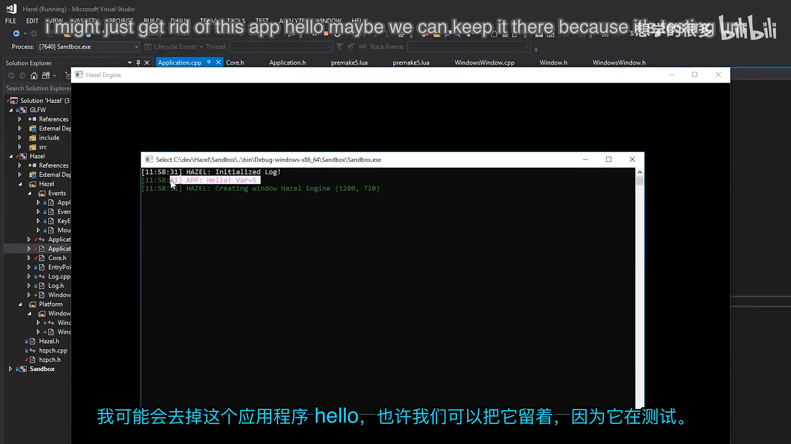
📷 Hazel 运行后创建出的 Hazel Engine 窗口与初始化日志
回到原视频 (00:26:00)
1. 为什么现在做窗口
(参考时间: 00:00:08)
严格从工程顺序看，游戏引擎可以在很晚才创建窗口。日志系统、事件系统、应用系统、层系统和输入管理等基础模块，都可能在窗口之前完成。但本系列同时承担教学与内容节奏，如果一直不显示任何图形，观众很难直观看到进展。
Cherno 因此做出折中：先完成日志和事件等必要基础，再开始创建窗口。日志用于观察窗口初始化是否成功，事件系统则与窗口输入紧密相关。窗口实现完成后，下一步才有稳定的 OpenGL 上下文来绘制画面和接入 ImGui。
graph TD
A[日志系统] --> D[窗口系统]
B[事件系统] --> D
C[预编译头] --> D
D --> E[OpenGL 上下文]
E --> F[图形渲染]
E --> G[ImGui]
D --> H[下一讲: GLFW 事件转发]
2. 平台抽象应该放在哪里
(参考时间: 00:04:48)
GLFW 本身已经跨平台，能够在 Windows、macOS 和 Linux 上创建窗口，并提供 OpenGL 上下文。即便如此，Hazel 仍然选择“每个平台一个窗口实现”，而不是把 GLFW 调用直接写进通用应用代码。
原因是未来不同平台仍可能出现差异：
- Windows 后续若改用 Win32 和 DirectX，需要直接获得
HWND、设备上下文等原生句柄； - macOS 和 Linux 可能有各自特有的窗口行为；
- 移动平台通常没有传统桌面窗口，而是使用 surface；
- 渲染后端还可能扩展为 OpenGL、DirectX、Vulkan 和 Metal。
因此，平台抽象被分成两层：
Hazel/Window.h定义与平台无关的窗口接口；Hazel/src/Platform/Windows/WindowsWindow.*实现 Windows 版本。
graph TD
A[Application<br/>平台无关] --> B[Window 接口<br/>平台无关]
B --> C[WindowsWindow]
C --> D[GLFW]
D --> E[Win32 API]
B -. 未来 .-> F[MacWindow]
B -. 未来 .-> G[LinuxWindow]
C -. 未来 .-> H[DirectX]
Platform 目录未来不仅放操作系统代码，也会放渲染 API 代码。这样通用代码只依赖抽象接口，平台细节集中在明确目录中。
3. 用 Git 子模块引入 GLFW
(参考时间: 00:08:21)
Cherno 使用了自己维护的 GLFW 分支，并为其补充 Premake 构建脚本。GLFW 不会以预编译二进制方式直接塞进仓库，而是作为 Git 子模块放置到：
Hazel/vendor/GLFW
命令形式上相当于：
git submodule add https://github.com/TheCherno/glfw Hazel/vendor/GLFW
使用子模块的好处是源码和构建脚本都在解决方案中，可以统一编译、调试和升级。缺点是依赖本身维护在独立仓库，主仓库只记录它指向的具体提交。
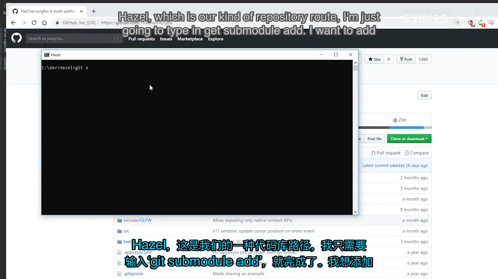
📷 在命令行中添加 GLFW 子模块
回到原视频 (00:09:12)
4. 把 GLFW 接入 Premake
(参考时间: 00:09:53)
主 Premake 文件增加三项关键配置：
- 建立依赖包含目录表；
- 引入 GLFW 自己的 Premake 文件；
- 让 Hazel 链接 GLFW 和
opengl32.lib。
IncludeDir = {}
IncludeDir["GLFW"] = "Hazel/vendor/GLFW/include"
include "Hazel/vendor/GLFW"
includedirs
{
"%{prj.name}/src",
"%{prj.name}/vendor/spdlog/include",
"%{IncludeDir.GLFW}"
}
links
{
"GLFW",
"opengl32.lib"
}
include "Hazel/vendor/GLFW" 会把 GLFW 提供的 Premake 文件展开到当前构建脚本中，从而生成一个名为 GLFW 的静态库项目。Hazel 随后把它作为项目依赖链接进去。
视频中还顺带处理了 Lua 文件里 Tab 与空格混用造成的缩进问题。格式本身不改变编译结果，但会让差异和后续维护变得混乱，因此需要统一缩进规则。
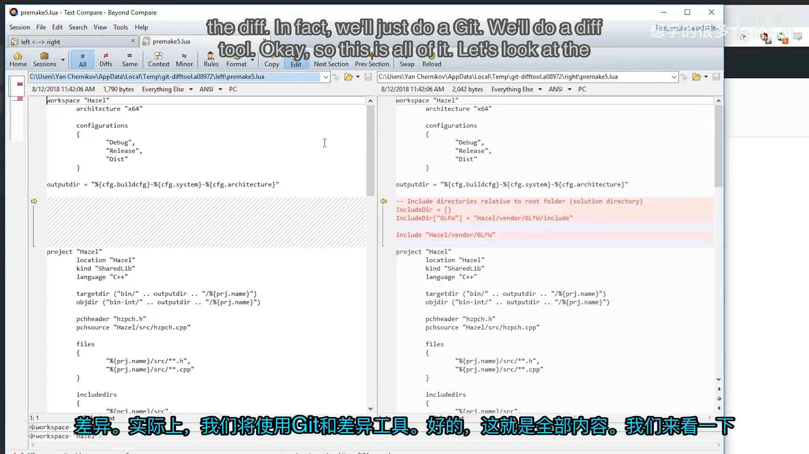
📷 Premake 中加入 GLFW 包含路径、项目和链接配置
回到原视频 (00:09:53)
运行 GenerateProjects.bat 后，Visual Studio 解决方案中会出现 GLFW 项目，Hazel 项目也会显示对 GLFW 的引用。第一次编译时虽然出现了 Visual Studio 不认识的命令行选项，但构建仍成功，说明 GLFW 已经作为静态库接入了工程。
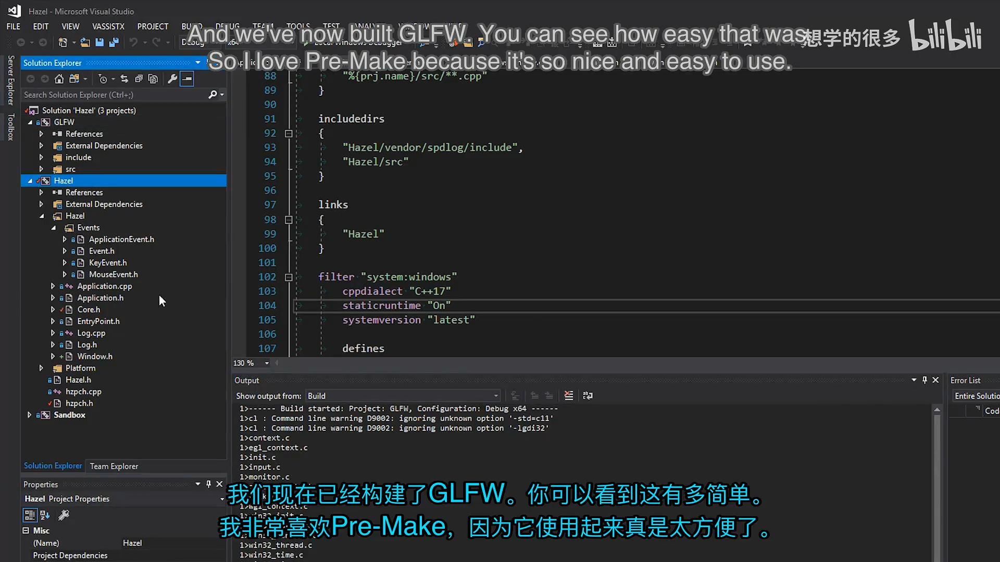
📷 Visual Studio 中生成 GLFW 项目并完成首次编译
回到原视频 (00:15:01)
5. Window 接口与窗口属性
(参考时间: 00:15:09)
平台无关的窗口接口位于 Hazel/Window.h。它几乎没有状态，只有一组纯虚函数，相当于桌面窗口的抽象契约。
struct WindowProps
{
std::string Title;
unsigned int Width;
unsigned int Height;
WindowProps(const std::string& title = "Hazel Engine",
unsigned int width = 1280,
unsigned int height = 720)
: Title(title), Width(width), Height(height)
{
}
};
class HAZEL_API Window
{
public:
using EventCallbackFn = std::function<void(Event&)>;
virtual ~Window() {}
virtual void OnUpdate() = 0;
virtual unsigned int GetWidth() const = 0;
virtual unsigned int GetHeight() const = 0;
virtual void SetEventCallback(const EventCallbackFn& callback) = 0;
virtual void SetVSync(bool enabled) = 0;
virtual bool IsVSync() const = 0;
static Window* Create(const WindowProps& props = WindowProps());
};
这里有几个重要设计点：
WindowProps把标题和尺寸集中为配置对象，并提供Hazel Engine、1280×720默认值；EventCallbackFn允许应用注册一个接收Event&的回调；OnUpdate()每帧调用一次，负责平台窗口的消息与缓冲区交换；SetVSync()和IsVSync()暴露垂直同步控制；Create()是静态工厂，但实现放在平台文件中，因此会返回对应平台的窗口子类。
接口中完全不包含 GLFW 类型。应用代码因此不需要包含 glfw3.h，也不会和具体平台实现耦合。
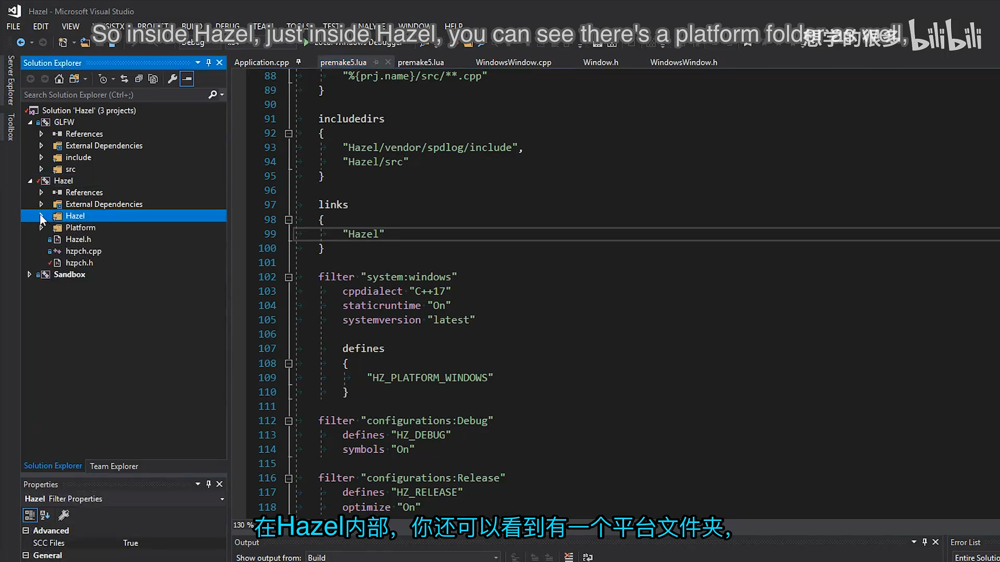
📷 平台无关的 Window 接口与默认窗口属性
回到原视频 (00:15:13)
5.1 为什么没有 Window.cpp
Window 本身只是接口，不应包含平台创建逻辑。Create() 的声明可以放在通用头文件，但实现必须由当前平台的 .cpp 提供。
Windows 构建时，Window::Create() 返回 WindowsWindow；未来 macOS 构建时，同一函数可以返回 MacWindow。选择哪个实现发生在编译期，不需要在运行时写 switch 判断平台。
6. WindowsWindow 的数据布局
(参考时间: 00:17:20)
Windows 实现位于 Platform/Windows/WindowsWindow.h。它继承 Window，保存一个原生 GLFW 窗口指针，并把通用窗口数据组织到 WindowData 中。
class WindowsWindow : public Window
{
public:
WindowsWindow(const WindowProps& props);
virtual ~WindowsWindow();
void OnUpdate() override;
inline unsigned int GetWidth() const override { return m_Data.Width; }
inline unsigned int GetHeight() const override { return m_Data.Height; }
inline void SetEventCallback(const EventCallbackFn& callback) override
{
m_Data.EventCallback = callback;
}
void SetVSync(bool enabled) override;
bool IsVSync() const override;
private:
virtual void Init(const WindowProps& props);
virtual void Shutdown();
GLFWwindow* m_Window;
struct WindowData
{
std::string Title;
unsigned int Width, Height;
bool VSync;
EventCallbackFn EventCallback;
};
WindowData m_Data;
};
为什么需要单独的 WindowData？GLFW 的事件回调是普通函数指针，不能直接绑定 C++ 成员函数和当前对象。GLFW 提供“window user pointer”，允许每个窗口携带一段自定义数据。
Hazel 选择把 WindowData 的地址交给 GLFW。回调发生时，可以从原生窗口取回同一个结构，读取或更新宽高、VSync 和事件回调，而不需要把整个 WindowsWindow 类型暴露给 GLFW。
graph TD
A[GLFWwindow*] -->|glfwSetWindowUserPointer| B[WindowData*]
B --> C[Title]
B --> D[Width / Height]
B --> E[VSync]
B --> F[EventCallback]
F -. 下一讲 .-> G[构造 Event 并回调 Application]
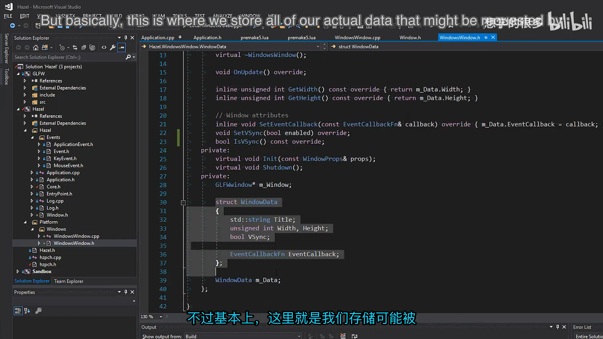
📷 WindowsWindow 与 WindowData 的私有数据布局
回到原视频 (00:18:02)
7. 工厂函数与 GLFW 单次初始化
(参考时间: 00:18:46)
Window::Create() 的实现只有一行：
Window* Window::Create(const WindowProps& props)
{
return new WindowsWindow(props);
}
它返回基类指针，调用方不需要知道具体类型。Application 之后会用 std::unique_ptr<Window> 接管这个对象。
7.1 静态初始化标记
GLFW 在进程中只应初始化一次，但同一个程序未来可能创建多个窗口。因此 Windows 实现使用静态布尔值记录全局初始化状态：
static bool s_GLFWInitialized = false;
初始化逻辑如下：
if (!s_GLFWInitialized)
{
int success = glfwInit();
HZ_CORE_ASSERT(success, "Could not intialize GLFW!");
s_GLFWInitialized = true;
}
这里特意把 glfwInit() 的返回值保存到局部变量，再交给断言检查。原因是断言在发布构建中可能被完全移除；如果把初始化函数直接写在断言表达式里，发布版就不会执行 glfwInit()。
如果未来需要断言始终保留表达式副作用，可以引入 VERIFY 宏。它与断言相似，但即使断言输出被关闭，仍然会执行被检查的表达式。
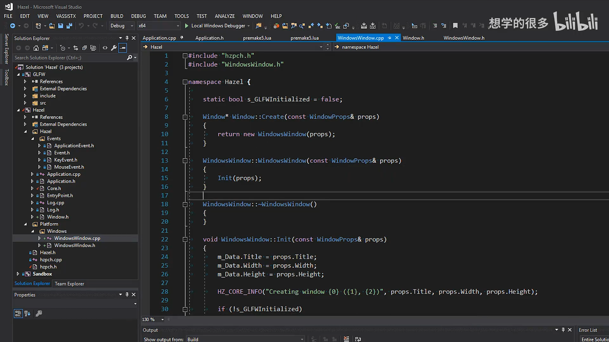
📷 WindowsWindow::Init 中单次初始化 GLFW
回到原视频 (00:19:14)
8. 断言系统
(参考时间: 00:20:17)
Core.h 新增了客户端断言和核心断言：
#ifdef HZ_ENABLE_ASSERTS
#define HZ_ASSERT(x, ...) { \
if (!(x)) { \
HZ_ERROR("Assertion Failed: {0}", __VA_ARGS__); \
__debugbreak(); \
} \
}
#define HZ_CORE_ASSERT(x, ...) { \
if (!(x)) { \
HZ_CORE_ERROR("Assertion Failed: {0}", __VA_ARGS__); \
__debugbreak(); \
} \
}
#else
#define HZ_ASSERT(x, ...)
#define HZ_CORE_ASSERT(x, ...)
#endif
启用断言时，条件失败会记录错误并触发调试器断点；关闭断言后，宏展开为空，不产生发布版开销。当前 __debugbreak() 是 Windows 专用实现，未来支持其他平台时需要切换为平台对应机制。
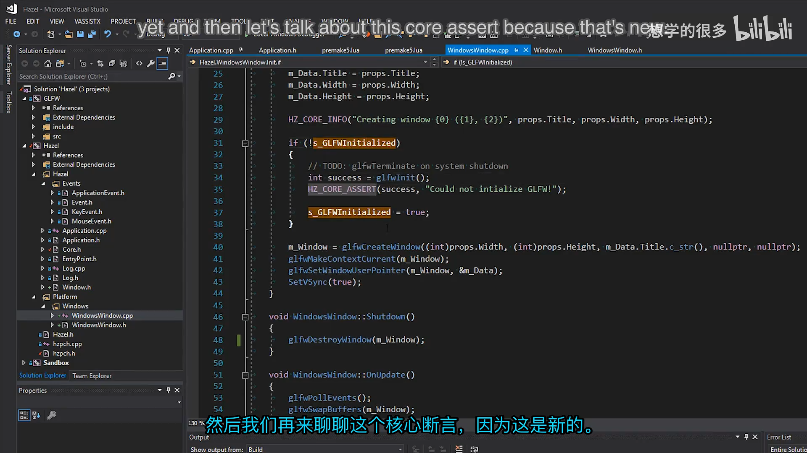
📷 Core.h 中新增的断言宏
回到原视频 (00:20:17)
9. 创建 GLFW 窗口与 OpenGL 上下文
(参考时间: 00:22:00)
WindowsWindow::Init() 完成以下步骤：
- 把
WindowProps复制到m_Data； - 记录窗口创建日志；
- 在必要时初始化 GLFW；
- 调用
glfwCreateWindow()； - 将 OpenGL 上下文设为当前上下文；
- 将
m_Data注册为窗口用户指针； - 默认开启 VSync。
关键代码如下：
m_Data.Title = props.Title;
m_Data.Width = props.Width;
m_Data.Height = props.Height;
HZ_CORE_INFO("Creating window {0} ({1}, {2})",
props.Title, props.Width, props.Height);
m_Window = glfwCreateWindow(
(int)props.Width,
(int)props.Height,
m_Data.Title.c_str(),
nullptr,
nullptr);
glfwMakeContextCurrent(m_Window);
glfwSetWindowUserPointer(m_Window, &m_Data);
SetVSync(true);
glfwCreateWindow() 的前两个参数是逻辑宽高，第三个参数是窗口标题。两个 nullptr 分别表示使用默认显示器和与当前 GLFW 上下文共享资源的窗口。当前版本直接从 GLFW 获得 OpenGL 上下文，尚未配置 OpenGL 版本、Core Profile 或显式加载函数。
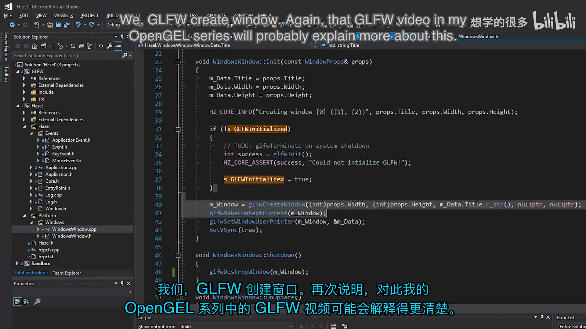
📷 glfwCreateWindow、OpenGL 上下文与用户指针设置
回到原视频 (00:22:00)
10. VSync、更新与关闭
(参考时间: 00:23:04)
10.1 VSync
void WindowsWindow::SetVSync(bool enabled)
{
if (enabled)
glfwSwapInterval(1);
else
glfwSwapInterval(0);
m_Data.VSync = enabled;
}
交换间隔为 1 时，缓冲区交换通常等待一个垂直刷新周期，从而把帧率限制在显示器刷新率附近；设置为 0 则不等待。这里的 1 表示间隔数量，不应理解成“只允许渲染一帧”。
GLFW 不提供查询当前交换间隔的简单接口，因此 Hazel 在 WindowData 中自行保存 VSync 状态，由 IsVSync() 返回。
10.2 每帧更新
void WindowsWindow::OnUpdate()
{
glfwPollEvents();
glfwSwapBuffers(m_Window);
}
glfwPollEvents() 处理操作系统和 GLFW 收集到的事件；glfwSwapBuffers() 提交当前 OpenGL 帧。考虑到本讲尚未注册事件回调，这里已经把所有输入事件从系统队列中取走，却还没有转交给 Hazel。
10.3 关闭
析构函数调用 Shutdown()：
void WindowsWindow::Shutdown()
{
glfwDestroyWindow(m_Window);
}
这里只销毁当前原生窗口，而不调用 glfwTerminate()。因为进程可能创建多个窗口，并且 GLFW 只初始化一次，全局终止应当在更明确的系统关闭阶段处理。当前代码仍保留了将来补充 glfwTerminate() 的 TODO。
graph TD
A[Application 构造] --> B[Window::Create]
B --> C[WindowsWindow 构造]
C --> D[Init]
D --> E{GLFW 是否已初始化?}
E -- 否 --> F[glfwInit + 错误检查]
E -- 是 --> G[跳过全局初始化]
F --> H[glfwCreateWindow]
G --> H
H --> I[glfwMakeContextCurrent]
I --> J[保存 WindowData 用户指针]
J --> K[SetVSync true]
11. 把窗口接入 Application
(参考时间: 00:23:53)
Application 是平台无关层，因此只保存 Window 基类指针：
class HAZEL_API Application
{
public:
Application();
virtual ~Application();
void Run();
private:
std::unique_ptr<Window> m_Window;
bool m_Running = true;
};
构造函数中通过工厂创建窗口：
Application::Application()
{
m_Window = std::unique_ptr<Window>(Window::Create());
}
std::unique_ptr 明确表达所有权：Application 拥有窗口，并在自身销毁时自动释放。构造顺序也很清晰：
Application 构造
-> Window::Create()
-> new WindowsWindow()
-> WindowsWindow::Init()
-> GLFW 初始化与窗口创建
原来的事件测试代码被移除，主循环暂时简化为：
void Application::Run()
{
while (m_Running)
{
glClearColor(1, 0, 1, 1);
glClear(GL_COLOR_BUFFER_BIT);
m_Window->OnUpdate();
}
}
glClearColor(1, 0, 1, 1) 分别表示红色、绿色、蓝色和 alpha，结果为不透明洋红色。它暂时验证 OpenGL 上下文有效，并让窗口中的清屏结果肉眼可见。
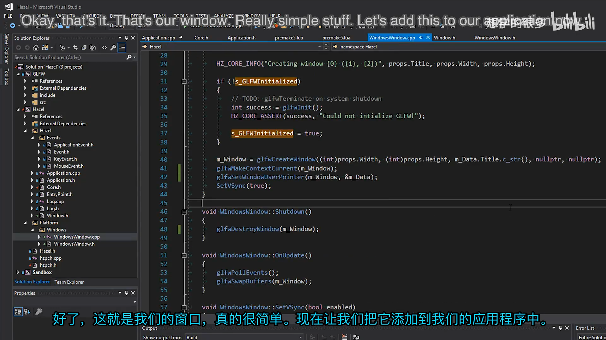
📷 Application 中使用 unique_ptr 持有 Window 并运行主循环
回到原视频 (00:23:54)
12. 第一次运行结果
(参考时间: 00:25:42)
运行程序后，输出窗口记录了：
Creating window Hazel Engine (1280, 720)
屏幕上出现标题为 Hazel Engine、大小为 1280×720 的窗口，内部显示洋红色清屏颜色。这说明：
- Premake 正确生成并链接了 GLFW；
- GLFW 成功初始化；
- 原生窗口创建成功；
- OpenGL 上下文有效；
- 每帧清屏和缓冲区交换正常工作。
暂时还不能通过点击关闭按钮结束应用，因为关闭事件尚未转换成 Hazel 的 WindowCloseEvent，主循环中的 m_Running 也还没有被修改。这正是下一讲需要补上的内容。
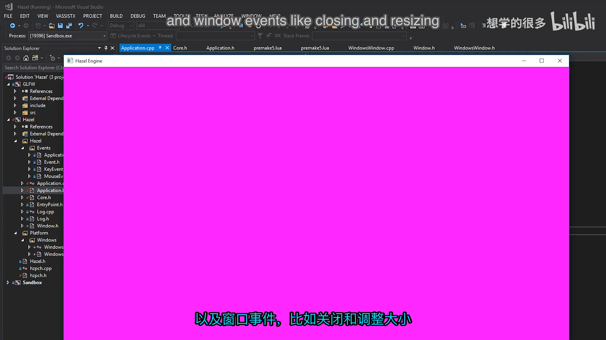
📷 OpenGL 上下文成功将窗口背景清为洋红色
回到原视频 (00:27:00)
13. 为下一讲预留事件回调
(参考时间: 00:27:05)
Window 已经定义了：
using EventCallbackFn = std::function<void(Event&)>;
virtual void SetEventCallback(const EventCallbackFn& callback) = 0;
WindowsWindow 会将这个回调保存在 WindowData.EventCallback。下一讲可以注册 GLFW 的窗口大小、关闭、键盘、鼠标按钮、滚轮和鼠标移动回调，在这些原生回调中：
- 通过
glfwGetWindowUserPointer()找回WindowData； - 根据 GLFW 参数构造 Hazel 的
Event子类； - 调用
data.EventCallback(event)； - 由
Application::OnEvent()使用EventDispatcher分发给各层。
sequenceDiagram
participant OS as 操作系统 / GLFW
participant WW as WindowsWindow
participant EV as Hazel Event
participant APP as Application
participant L as 未来 LayerStack
OS->>WW: GLFW 原生回调
WW->>WW: glfwGetWindowUserPointer
WW->>EV: 构造具体 Hazel Event
WW->>APP: EventCallback(event)
APP->>APP: EventDispatcher 分发
APP->>L: 逐层传播 / 可标记 Handled
视频明确说明，窗口类不应直接依赖 Application。它只依赖 Window 的抽象回调类型，由应用主动注册回调，从而保持模块解耦。
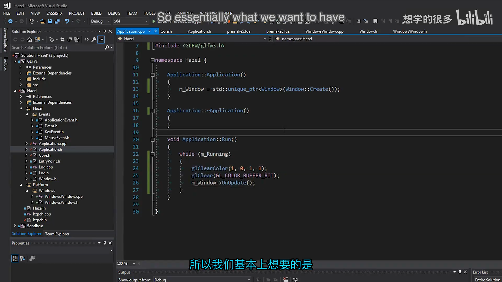
📷 事件回调接口如何把 Window 与 Application 解耦
回到原视频 (00:27:05)
14. 其他工程调整
(参考时间: 00:27:50)
日志几乎每个文件都会使用，因此本讲把日志头加入预编译头，减少重复解析和编译开销。
// hzpch.h
#include "Hazel/Log.h"
另外，应用不再需要上一讲用于测试事件系统的手工 WindowResizeEvent 代码。事件系统本身保留，只是本讲的主循环重点转移到窗口创建和 OpenGL 清屏。
15. 本节结论
本讲完成了一个清晰的最小窗口层：
- 用 Git 子模块引入 GLFW；
- 用 Premake 将 GLFW 作为静态库项目编译并链接；
- 定义平台无关的
Window接口与WindowProps； - 在
WindowsWindow中封装 GLFW 和原生窗口指针； - 用
WindowData为未来 GLFW 事件回调准备用户数据； - 通过工厂函数隐藏平台实现；
- 使用断言检查 GLFW 初始化；
- 创建 OpenGL 上下文，支持 VSync；
- 在
Application中拥有窗口并驱动每帧更新； - 用洋红色清屏验证图形上下文成功工作。
这一讲最重要的不是“窗口出现”本身，而是建立了平台抽象的边界。应用只依赖 Window，Windows 细节留在 WindowsWindow 和 Platform/Windows 中。事件回调接口也已经就位于窗口边界，下一讲只需把 GLFW 的原生事件转换为 Hazel 事件。